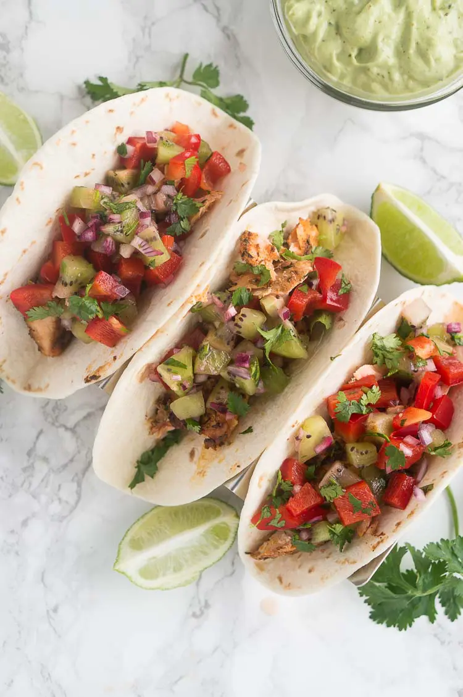

Crispy Tacos

Description
These Crispy tacos with kiwi salsa are a unique, refreshing, and tasty meat-free snack
If you’re looking for delicious vegan snacks, then these crispy tacos with kiwi salsa are for you.
Ingredients:
- 6 Taco Shells
Bean Filling:
- 1x Onion
- 2x Tomatoes
- 1x Can Red Beans
- ½ tsp Salt
- ½ tsp Italian herbs
- ¼ tsp Chili flakes
- 1 tsp Olive oil
Kiwi Salsa
- 1x Onion
- 1x Handful of Parsley
- 3-4x Kiwis
- 1x Lemon Juice
- ½ tsp Salt
Steps:
Bean Filling
- In a pan heat up olive oil and saute finally chopped onion for about 3-4 minutes until slightly golden brown
- Add salt and chopped tomatoes and saute for another 5 minutes
- Add drained and rinsed kidney beans and start mashing them wit spatula while it's sauteing
Kiwi salsa
- In a bowl add chopped onion, parsley and kiwi and mix with salt and lemon juice
- Leave it to marinate for about 5 minutes
- Now build your tacos by placing bean mixture first and then kiwi salsa